별따러가자는 모빌리티 안전과 관련된 기술을 바탕으로 사고를 예방하고, 라이더가 안전하게 주행할 수 있는 환경을 만드는 데 주목한 기업입니다.
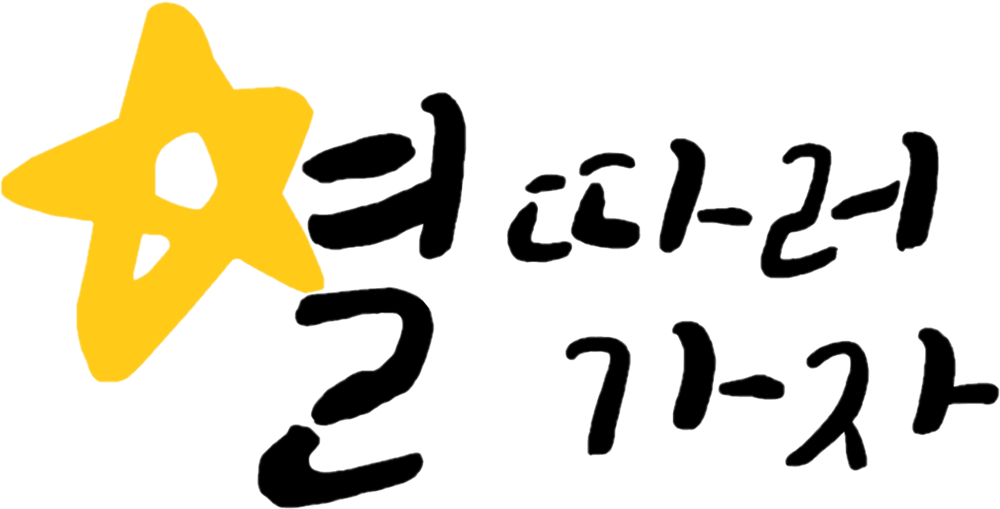
지구 위 모두가 안전하게 달릴 수 있도록.
라이더가 안전을 떠올릴 때 가장 먼저 생각나는 브랜드가 되는 것.
AI 모빌리티 기술로 라이더의 귀갓길을 지킵니다.
사고 예방을 최우선 가치로 둡니다.
모션인식과 AI로 위험을 먼저 읽습니다.
라이더의 무사 귀가를 바라는 마음을 담습니다.
모션인식 기술을 통해 주행 중 발생하는 움직임을 감지하고, AI가 이를 분석하여 주행 상황과 위험 요소를 파악하는 방식입니다.
충남 예산군의 실제 사례와 구조 사례를 소개합니다.
라이더가 “안전” 하면 별따러가자를 먼저 떠올리는 것.
올해 12월 3일 시행되는 안전교육 의무화 개정안에 주목했습니다. 새로 배달을 시작하는 라이더는 교통 안전교육을 반드시 받아야 하며, 앞으로 모든 신규 라이더가 거쳐야 하는 출발선이 생깁니다.
저희의 제안은 그 출발선에서 교육을 마친 라이더에게 별따러가자 스티커를 함께 건네는 것입니다.
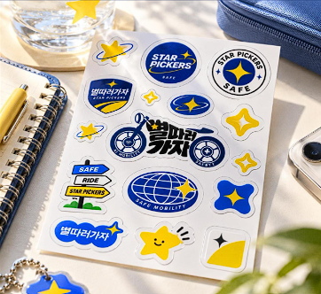
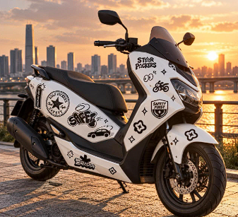
스티커뿐 아니라 다양한 목업 상품도 제작해, 차량은 물론 일상 속 여러 곳에서 브랜드가 자연스럽게 노출되도록 합니다.
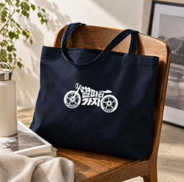
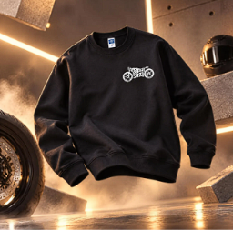
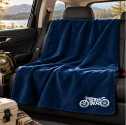
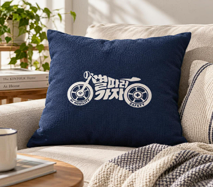
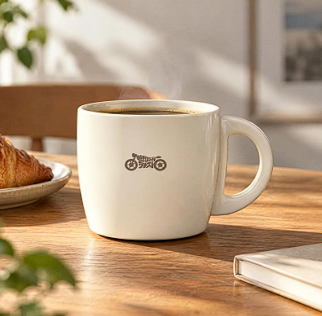
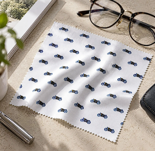
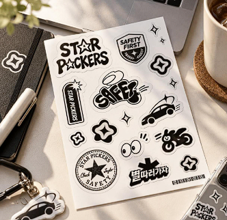
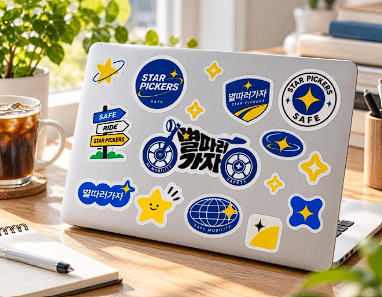
아이디어 스케치에서 최종 디자인까지, 별따러가자의 브랜드 이미지가 만들어진 과정입니다.
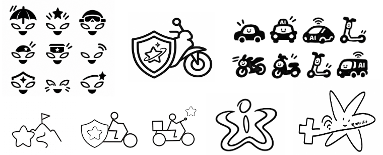
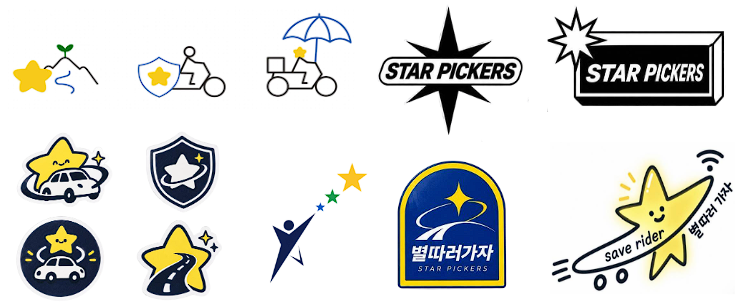
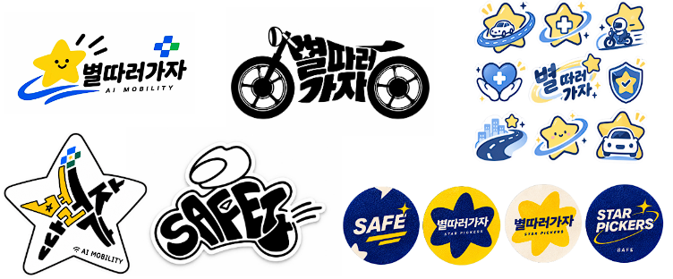
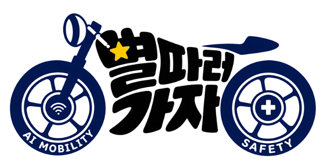
앞바퀴에는 AI MOBILITY, 뒷바퀴에는 SAFETY를 담아 기술과 안전이라는 두 가치를 한 이미지로 표현했습니다.
| 상호명 | 주식회사 별따러가자 |
|---|---|
| 대표자 | 박추진, 김경목 |
| 사업장 주소 | 서울 서초구 매헌로 16 (양재동, 하이브랜드) 1208호 |
| 연락처 | 070-4415-2662 |
| 사업자등록번호 | 893-81-01716 |
| 대표자 이메일 | support@star-pickers.com |
| 공식 홈페이지 | https://starpickers.imweb.me/ |
| 별빛항해 문의 | 김유주 · 010-7776-3385 · ilujuju04@gmail.com |